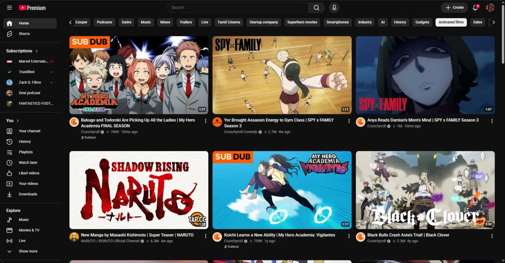

Linger×
Search chats and videos
R
RohitSent a Short
J
JaiThat essay on rivers was great
A
AryaSent a video · "start at 14:30"
G
Grandpa and the BoisYou: finished the lecture!
3
Linger is a chat platform for the YouTube website. You can share videos right from and in where you watch it.
Work in progress
This started with a pattern between me and a friend of mine. We kept finding videos we wanted the other to watch, and sharing meant leaving YouTube for a messaging app, pasting a link, which is a hassle.
We both also believed in dopamine detox from the. The stimulation was more than enough to be inspired but a little too much for thinking. Reels and Shorts had taken a lot of our time.
How much good content we had been scrolling past.
Once the scroll was gone, we found a lot of long form video on YouTube that we would have loved if we had not been flicking through reels. Nobody had told us it was there. We were just not looking looking.
Films, essays, interviews, animations and travel videos, the list goes on. These were the videos creators spent weeks making.
Videos where you learn something new, like a skill or an idea.
Videos that turn you on to a topic you had never thought about and make you want to go deeper. These are very interesting from my perspective as a generalist.
Every time we found one, we wanted the other person to see it. The sharing habit stayed. Instagram already has a good model for this, where you send a reel to a friend and the chat can grow around it. YouTube has no equivalent that lives inside the site.
To make it easy share these videos with your friends. This was the only thing I felt missing in the Google ecosystem.
Linger is built on a bet. Sharing should nudge people toward videos they choose, instead of toward the next autoplay. It is something that makes you use the algorithm wisely. Here is the evidence I looked at.
The meta analysis in Psychological Bulletin pooled 71 studies. Heavier short form video use was moderately associated with poorer cognition, with the clearest links for attention and inhibitory control. The links were strongest for people scoring high on addiction style scales, not only for hours watched.
The cognition result relied mostly on self rated attention and self control, and only about one study in ten controlled for general social media use. The authors also note that distressed people may turn to short video for relief, so cause can run both ways.
Linger doesn’t claim to fix attention. It supports the habit change behind a dopamine detox and builds a system where you share and discuss long form content just like you do with short form content.
The interface mostly revolves around one small button. It just sits over the screen unless you are watching a video in full screen. The core screens are the inbox, chat and a send sheet.
The inbox is simple and follows a decades long mental model with the linger branding on top.
The chat interface follows the same logic and has Linger's brand colours. The video does not have to be a long link anymore. The video title and thumbnail remain the same in the chat so that users can view the content how the creator intended them to.
Both ways end in the same send sheet.
Hover any video on the home page. Its card pops up and the red send button appears in the corner straight away. This is best when you seem something and want to pass it on righ away.
On a watch page, click the red Linger button next to the video actions. It opens up the send sheet. This approach works best when you are watching a video or one moment in the video is the point.
A paper plane in Linger red: it sends the video to a friend. It shows only on the thumbnail you hover, and YouTube’s own Share button stays as it is.
Sharing a good video no longer means leaving the platform. You can pass it on the second you see it or after you have watched it.
The Linger logo is a chat bubble with a face set in an oval of Linger red. It comes in two versions, and the extension switches between them by itself. Its asleep while Linger is closed and awake while it is open.
The oval is a little wider than it is tall and it is mostly to accomodate the "face" of the logo. The wordmark is a lowercase “linger” set in Montserrat Alternates Bold. Its tailed “l” and rounded letters give the name a laidback feel that matches the sleepy mark.
The extension switches between two states by itsel. When you open it the eyes pop open and blink, and they shut again when you close it.
Linger uses just two colors, crimson red and off white cream. They are similar to YouTube's own color but slightly desaturated. So in a way it is similar while also creating a unique identity within the system.
Linger is an independent concept by its maker. It is not built, not published, and not affiliated with or endorsed by YouTube or Google. YouTube is a trademark of Google LLC. Research figures are summarized from the sources linked in Research and may be updated.